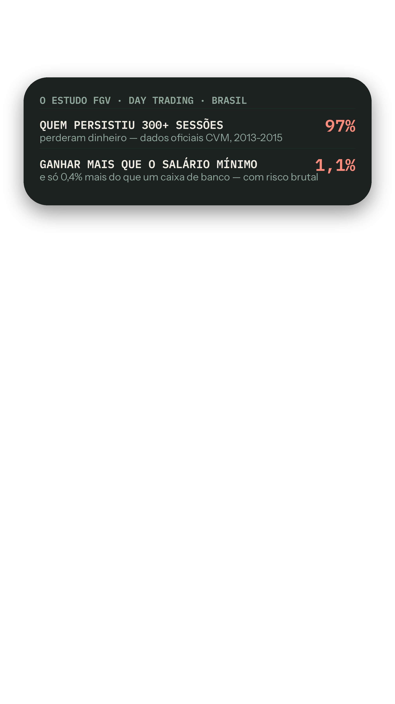
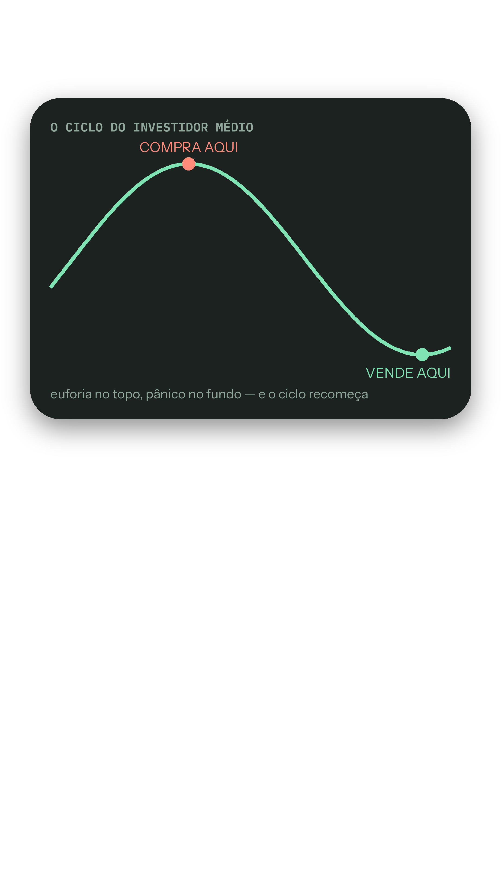
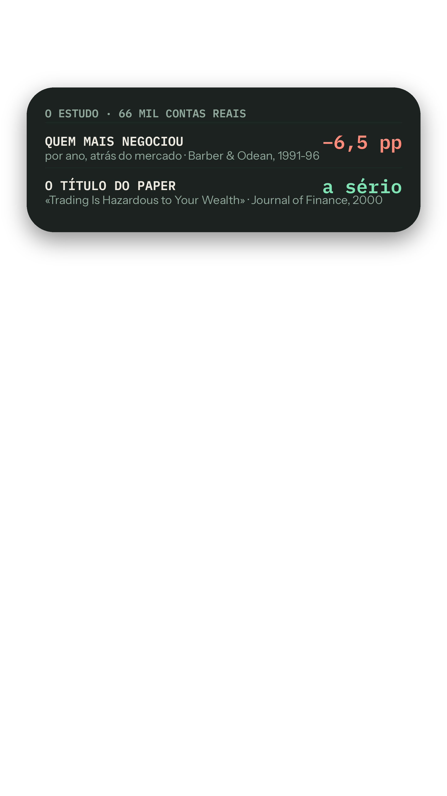

Storyboard de produção · identidade B3 Terminal Humano · timeline 4K
Vídeo #19 — O pior inimigo do teu dinheiro · 42-46s
PUB #06 · 📅 Publicação sugerida: dom 16/ago · 18h30. Camadas CapCut: V1 filmagem · V2 overlays PNG (100%, centrados) · V3 etiqueta de fonte (canto inf.-esq.) · V4 legendas (auto, estilo da amostra). Regras: cortes secos · 1 elemento de dado de cada vez · nada sobre a cara · números reconfirmados na fonte no dia (⚠️ da nota de rigor).
BLOCO 1
0-9s
🎙 Fala"97% de quem tentou viver de trading — comprar e vender na bolsa todos os dias — perdeu dinheiro. Estudo gigante, feito no Brasil."
🎬 CâmaraFrio, factual; a tradução embutida mantém toda a gente a bordo.
📺 Overlay
v19-7-fgv.png🏷 Etiqueta
fonte-estudos.png — FONTE: FGV/CVM · 2013-2015BLOCO 2
9-16sSEM OVERLAY — só tu e a câmara
🎙 Fala"Só 1% ganhou mais que um salário mínimo. E não é falta de inteligência — é o cérebro."
🎬 CâmaraManter o cartão; a viragem do vídeo começa aqui.
📺 Overlaynenhum (manter o anterior / respiro)
🏷 Etiquetafora (sem dado no ecrã)
BLOCO 3
16-20s🎙 Fala"O teu faz o mesmo, mesmo sem nunca teres feito trading."
🎬 CâmaraDedo à câmara com sorriso — cúmplice, não acusador.
📺 Overlay
v19-1-hook.png🏷 Etiquetafora (sem dado no ecrã)
BLOCO 4
20-30s
🎙 Fala"O mercado sobe, sentes que estás a ficar de fora — compras no topo. Cai, o medo grita mais alto que o plano — vendes no fundo."
🎬 CâmaraMão desenha a onda; nomear as emoções devagar.
📺 Overlay
v19-2-ciclo.png🏷 Etiquetafora (sem dado no ecrã)
BLOCO 5
30-42s
🎙 Fala"A ciência mediu: em 66 mil contas normais, quem mais MEXIA ficou seis vírgula cinco pontos por ano atrás do mercado. O problema não é investir — é mexer por emoção."
🎬 Câmara«MEXIA» com ênfase; a frase final é a tese do vídeo.
📺 Overlay
v19-6-estudo.png🏷 Etiqueta
fonte-estudos.png — FONTE: JOURNAL OF FINANCE · 2000BLOCO 6
42-51s
🎙 Fala"A defesa: uma estratégia decidida a frio, automática, todos os meses. Tu defines as regras antes — o plano cumpre-as por ti."
🎬 CâmaraTom de solução; mãos calmas.
📺 Overlay
v19-4-defesa.png🏷 Etiquetafora (sem dado no ecrã)
BLOCO 7
51-55s🎙 Fala"Já te apanhaste a decidir com o medo? Eu já."
🎬 CâmaraO «eu já» com pausa antes.
📺 Overlay
v19-5-cta.png🏷 Etiquetafora (sem dado no ecrã)
Descrição do post (copiar tal e qual)
97% de quem tentou viver de trading perdeu dinheiro — é o maior estudo do mundo, feito no Brasil (FGV).
Mas o vídeo não é sobre trading: é sobre o teu cérebro. Ganância no topo, medo no fundo — e a ciência que mostra que o problema não é investir… é mexer por emoção.
Já te apanhaste? Confessa 👇
#investir #psicologia #fgv #daytrading #financaspessoais #fcd19
1.º comentário — publicar e FIXAR
Já te apanhaste a decidir com o medo? Confessa 👇 (eu já)
(rigor: FGV/CVM — Chague, De-Losso & Giovannetti: TODOS os que começaram day trading no mercado de futuros brasileiro em 2013-15 e persistiram 300+ sessões — 97% perderam; só 1,1% ganhou mais que o salário mínimo; só 0,4% mais que um caixa de banco; o melhor: ~US$310/dia com risco brutal. E nas contas normais: Barber & Odean, Journal of Finance 2000 — 66.465 contas; quem mais negociava rendeu ~11,4%/ano vs ~17,9% do mercado. Nota importante: investir não é o problema — mexer por emoção, sem estratégia, é)
Fecho
Exportar 2160p · 30fps · bitrate alto → capa com template → publicar → nota de rigor fixada → 60 min de comentários → dashboard (estado+métricas) → ⬇ performance.json → commit → linha no learnings.md